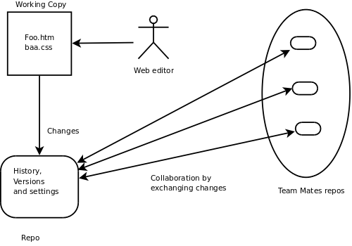
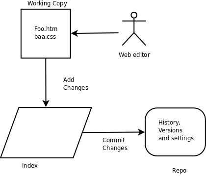

Version Control and Git for Non-Programmers
Introduction
Version Control is the process
of recording the history of changes to files as they are modified.
Users can go back in time and get old versions and identify where
changes were introduced (people sometimes refer to version control
tools as time machines). This mean that it is easier to
- Protect against 'accidental' changes and get a known good version
of a file back
- Have more than one person working on changes at once (programmers
refer to this as parallel development)
- Get an older set of files that may be requested by a customer or
manager
The first version control (VC) tool, SCCS,
was written in 1972 and since that time there has a some major advances
in the way tools are used. Git represents the current 'state of the
art' in that it is distributed (Mercurial
and Bazaar
are examples of other open source distributed VC tools). A distributed
VC tool gives each user a complete history of all changes to the files
which they work on and make further changes, so for instance it's
possible to look at previous versions of files while flying across the
Pacific (assuming your laptop battery lasts). Later all changes can be
merged together over the computer network into a common thread for
release or further work. Whilst this sounds complicated the tool makes
it relatively easy and error free.
Other well know VC tools, for example Subversion,
are classed as centralised and provide only a single place (repository)
into which all users put the changes on a regular basis. In this model
users do not have a personal copy of the change history, they only have
the set of the files they currently working with. Git also has a some
plug-ins to allow it it be a local client to a remote repository
maintained by other tools such as Subversion
so you can be a Git user and still work on projects that use those
tools (see git-svn).
Git runs on Windows, OS/X, Linux and UNIX.
This article presents Git and version control without assuming any
prior knowledge or programming experience. Because of it's introductory
nature certain details are simplified or omitted and the use of the
Git Graphical User Interface (git-gui)
is emphasised.
Concepts
Git maintains a database of all previous file versions in a repository
(repo) and it is (usually) located in a directory called .git. In
UNIX
style systems names that begin with a . are not displayed by default so
the repo is usually not visible during normal work except on MS
Windows. As well the
contents of the files and directory versions there is additional
housekeeping information about current work, other remote repositories
we are sharing with, current settings and so on. In Git we have a
separate repo for each of our projects (websites for instance)
As well as the repo there is the current set of working files that are
we are working on and editing. As we complete changes to our working
files we add the changes to the repo -- this is called commiting
changes. In actual fact we are not fully committed as we can always
get old versions back and make changes to the changes. We can also get
a summary of our work against previous versions to see what
we have done so far. The set of files we are currently working is
called the working copy. We can easily change the working copy to a
different version whenever we want.

Before progressing any further let's install Git and set up a small
test repo to work with.
Installing Git
If you use Linux then installing should be a simple matter of using
your package manager to install git (and possibly git-gui if it
is
a separate package). For Apple OS/X either use the installer or
you can use Mac Ports.
Windows users who use Cygwin can use the Git from Cygwin, use the
Cygwin set-up.exe package manger to install the appropriate packages.
Other Windows users should use the the native Windows Git package
msysgit
Special Notes for Windows Users using msysgit
If you do not use Cygwin or Putty, then accept all
defaults during the install. You may care to make a single change
to select "Run Git from the Windows Command Prompt"
If you want to use Git from the command line (which is much easier once
you are used to it) then set up the VISUAL environment string to point
to a text editor that can handle UNIX format text files. For instance
for Notepad++ type the following "set
VISUAL=c:\Progra~1\Notepad++\notepad++.exe" (note the lack of spaces in
the path string) or add it permanantly to the environment. This will be
the editor used to create your commit messages, more on that later.
Note that Windows Notepad is inadequte to the task.
Starting to use Git
Locate the git-gui command, either from a menu or by running git-gui
from the command line.You see a
screen similar to this
 .
.
Select 'Create New Repository'
Enter a the name of a new directory. Git will create the directory and
initialise an empty repo
Alternatively you do this from the command prompt
> mkdir demo1
> cd demo1
> git init
Initialised empty Git repository in /home/alec/miniProjects/sitepoint_git_intro/demo1/.git/
>
If you look in the directory you should see a directory names .git (On
OS/X or Linux you will need to use the command ls -A to show the hidden
.git directory) In your newly created directory edit some new files.
You can either use your favourite editor or again use the command line
> echo text1 > file1
> echo text2 > file2
You will then have some changes that are not under version control, in
Git these are called unstaged.

You can get the same information from the command line with git status
> git status
# On branch master
#
# Initial commit
#
# Untracked files:
# (use "git add <file>..." to include in what will be committed)
#
# file1
# file2
nothing added to commit but untracked files present (use "git add" to track)
Now for a little diversion before we add our files to the repository
The Git Index
Git is a little different to most VC tools in that adding changes to a
repo is a two stage process. All changes, before they arrive at the
repo, are staged into the index.

The index allows us to add changes on the way to building a commit.
Whilst the index seems confusing and unnecessary at first it is useful
for
a
variety of reasons:
- Our working copy may contain more that one set of changes and the
index allows us to cherry pick which ones will be part of the next
commit.
- You can incrementally make changes (using your own work-flow)
before making a commit.
- You can stage and unstage changes in more complex work flows (see
the git stash)
However won't be talking about the index any more here, we will just
use it.
Before using Git for the first time we need to tell Git who we are
(name and email
address). From the Git gui interface select Edit->Options and fill
in the top two fields under Global (leave all other values as defaults)

Alternately run the commands
> git config --global user.name "Alec Clews"
> git config --global user.email "alec.clews@voga.com.au"
Now we can add our changes to
the index and commit them to the
repository
First select both files on the "Unstaged Changes" pane

Then either press <ctrl>-t, or from the "Commit" menu select
"Stage To Commit"
The display then changes to show that we have no changes waiting to be
staged, but we do have changes to be committed

Alternatively run the following command
or even
We can now commit our first change to the repo. Each time we make a
commit Git expects an informational message that gets added as part of
the commit -- if you don't provide message no commit will be
made. Generally we add a single line
description and then a more detailed message
<need Windows Screen shot>
Now that we have made a commit, the latest version in the repo (called
HEAD) is the same as the contents of working files. Running git
status should show the message..
We can always refer to the contents of the last commit as HEAD and the
contents of the commit prior to that as HEAD^1 (and HEAD^2 for the
commit prior to that, and so on). However that quickly gets cumbersome
and hard to use, so Git gives each commit a special name which is an
apparently a random string of 40 characters called the sha1 hash.
Whilst it does not look very user friendly every commit across the
world has a unique sha1 and when you come to share your history with
other Git users (for instance other members of the web team) there is a
unique way to refer to your work and it's history. If two users have
the same sha1 in their repo then they are refering to the same piece of
work. In practice humans can usually just refer to the last few unique
digits in the sha1 to uniquely identify a commit.
As a user you will generally only see sha1 used to represent a commit,
however 'under the covers' sha1 is used to identify files, directories
(trees in Git terminology) and tags. This has an interesting, and
highly desirable, effect. When you rename a file (or move it in the
directory tree) it's sha1 does not change, but the tree that refers to
the file and it's name does. This means that Git can track changes and
moves far more easily than tools such as Subversion.
<how to make the next change>
Now we need to make the next change
> echo more text >> file1
> git status
When we get back in morning we've forgotton how far we got with the
changes
<how to show the history, diffs etc>
Branches and merges
One of Git's most powerful features is support for easy branching and
merging of files. If you look back over the previous examples you will
see references to 'master'. This is the name of default branch
and every time we had changes they will be added to the history
of the master branch. However often life does not proceed in a
long straight line -- we have to jump around and work on
different sets of changes and Git makes this a lot easier than
you would think. Let's make this a little more concrete.
Suppose we have a web site which is currently in production. That work
will be maintained on master as the current production release. We now
have to a) Prepare new changes for the next release of the web site and
b) Fix issues that comes up in production (and probably a million other
things as well...)
We can do represent this in Git by having three branches
- master: What is in production (or about to the released to
production)
- development: Our new set of features for the next release.
- maintenance: A copy of master that we use to make and test
immediate fixes to the live site
Let's set up the example and see how we do this (for simplicity we will
use the command line to set up our demo, it's similar to our example
above)
> mkdir demo2
> cd demo2
> git init
... edit index.html...
> git add .
> git commit -m "Initial Production version"
> $git status
# On branch master
nothing to commit (working directory clean)
Now we release the latest contents of the git repo to the web site (for
simplicity I'm discussing the mechanisms for doing that later). All is
right with the world and we come in the next day and start working on
new features
> cd demo2
> git branch "rel_2"
There are now two branches -- any changes on once branch are
independent of the history recorded on the branch. We can list the
branches like this
> git branch
* master
rel_2
The currently active branch is marked with an asterisk. We can now work
on rel 2 with a simple checkout
> git checkout rel_2
Switched to branch 'rel_2'
and so
> git branch
master
* rel_2
Now we make some changes for the next release, in this case editing
index.html. We can see summary of changes by looking in the gui or
using git diff on the command line

> git diff
diff --git a/index.html b/index.html
index 800b514..dd9ef86 100644
--- a/index.html
+++ b/index.html
@@ -4,5 +4,7 @@
</head>
<body>
hello world<br>
+<br>
+and goodbye as well<br>
</body>
</html>
The lines beginning with '+' shows the change I have not staged. git
diff has a variety of option that allow you display changes between the
working copy, index and various revisions. Type git diff --help at the
command prompt, all Git commands support the --help option.
I'll now stage and commit the change using a single git command (for
illustrative purposes).
> git commit -a -m "say goodbye"
[rel_2 0015d91] say goodbye
1 files changed, 2 insertions(+), 0 deletions(-)
Git tells us (reading from the bottom up.
- It has tracked a change to 1 file
- The file change consisted of 2 lines inserted
- That a new commit with a sha1 starting 0015d91 was created
- That the HEAD (and branch rel_2) point to that new commit
Running the git log command summarises the previous two commits
$git log
commit 0015d91c6d24f6d43627bf45af82ee2085fbfc5d
Author: Alec Clews <alec.clews@voga.com.au>
Date: Wed Jul 29 09:38:51 2009 +1000
say goodbye
commit e74e1271907baf14a4cd5c2d7724373face011d6
Author: Alec Clews <alec.clews@voga.com.au>
Date: Mon Jul 27 22:05:06 2009 +1000
Initial Production version
Now lets do a production fix without affecting our work in progress.
Remember that the master branch is the current copy of
production, so let's move our working copy back to production (because
our new changes are safe on the rel_2 branch).
>git checkout master
Switched to branch 'master'
> cat index.html
<!DOCTYPE HTML PUBLIC "-//W3C//DTD HTML 4.01 Transitional//EN">
<html>
<head>
</head>
<body>
hello world<br>
</body>
</html>
So we have gone back to the production environment. Let's create a new
branch for production support
> git branch prod_support
> git checkout prod_support
Switched to branch 'prod_support'
> git branch
master
* prod_support
rel_2
So now we have three banches and we are working on the prod_support
branch (because that is the last branch we checket out)
...edit index.html...
Releases
Branch
Merge
tags
Remote repos
Clone
Upstream vs Origin vs local repository
Pull/Fetch
Push
GitHub
Social aspects of sharing technical content
Itch scratching
Recognition (see also ohloh.net)
mention beanstalk for SVN users
Benefits
Easy project history sharing
Easy way to share code – pull requests
Other features (issues/wiki)
Workflow ??
Motivation
Professional
Life saving
Laptop/Disconnected lifestyle compatible
Fast
Flexible
Further reading
Licence and
Git History
Git was initially developed by Linux Torvalds in 2004 and is now
maintained
About the author
Alec Clews is principal consultant at Voga Consulting Services
(http://voga.com.au) where he specialises in SCM and Application
Life-cycle
Management. You can connect to him at
http://www.linkedin.com/in/alecclews, have a conversation with him as
alecthegeek on twitter and identi.ca, or find his code at
http://github.com/alecthegeek.
Copyright
This article is copyright © 2009 SitePoint Pty. Ltd. All Rights
Reserved. Join the discussion at
http://sitepoint.com/launch/git-tutorial/